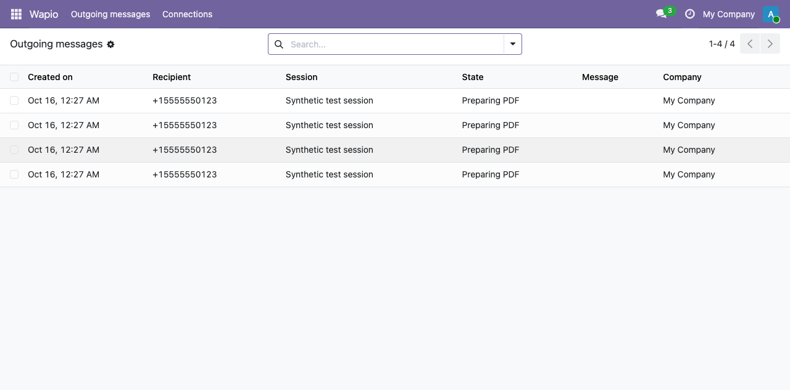
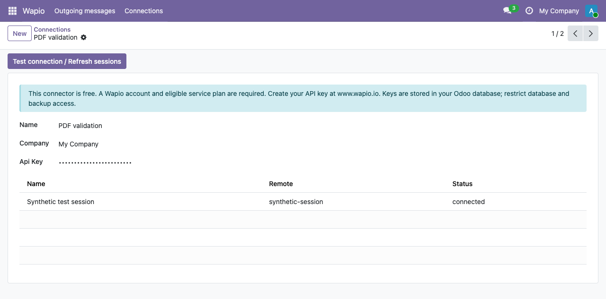
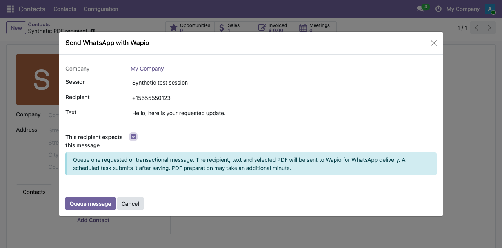

<section class="oe_container">
  <div class="oe_row oe_spaced">
    <h2 class="oe_slogan">Wapio WhatsApp Connector</h2>
    <h3 class="oe_slogan">Customer support and transactional updates from Odoo</h3>
    <p>Send requested WhatsApp messages from contacts, CRM leads, sales quotations and customer invoices. Attach quotation or invoice PDFs without making Odoo attachments public.</p>
    <ul><li>Connect using your Wapio API key.</li><li>Discover and select connected WhatsApp sessions.</li><li>Queue messages with stable IDs for safe retries.</li><li>Separate company connections and sender permissions.</li><li>View submission IDs and actionable failures.</li></ul>
    <h3>External service and pricing</h3>
    <p>This Odoo module is free. It requires an account and eligible service plan purchased separately at https://www.wapio.io. Your Odoo hosting costs are separate. Wapio is an independent service; this app does not imply endorsement by Odoo or WhatsApp/Meta.</p>
    <h3>Setup</h3>
    <ol><li>Install on Odoo 19 Community/Enterprise on your own server or Odoo.sh. Odoo Online is unsupported.</li><li>As an administrator, open Wapio → Connections and enter your API key.</li><li>Click Test connection / Refresh sessions. Pair WhatsApp in the Wapio dashboard first.</li><li>Grant the Wapio Sender permission to authorized staff.</li><li>Open a contact, lead, quotation or customer invoice and choose Send WhatsApp with Wapio from Actions.</li></ol>
    <h3>Data and delivery</h3>
    <p>The selected recipient, message and optional PDF are sent to Wapio for WhatsApp delivery. Keys and queued content are stored in your Odoo database; administrators must secure database and backup access. PDFs upload to Wapio media storage. See Wapio's privacy policy for service data handling.</p>
    <p>Submitted means accepted by Wapio, not delivered to WhatsApp. After an uncertain failure, retry the existing message record. Creating a new message creates a new ID and may send another message. Automatic business-event notifications and incoming-message synchronization are not included in this release.</p>
    <h3>Outgoing queue</h3>
    <p>Actual Odoo 19 screen with synthetic local test records. No live delivery is implied by these screenshots.</p>
    
    <h3>Company connection</h3>
    
    <h3>Compose one requested message</h3>
    
    <p>Documentation: https://www.wapio.io/docs · Support: contact@wapio.io</p>
  </div>
</section>
